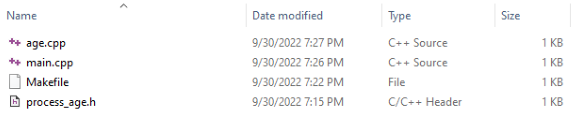
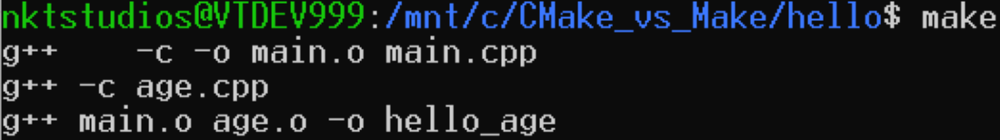
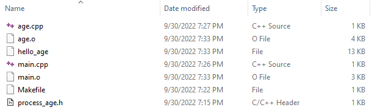
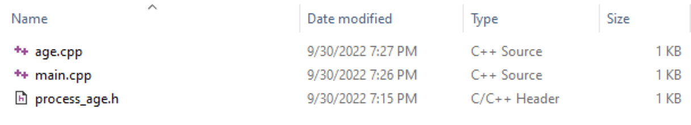
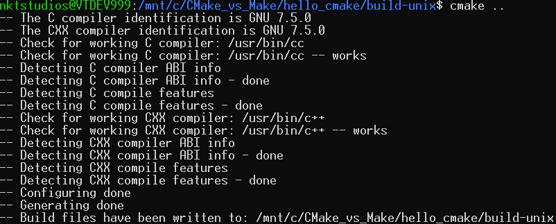
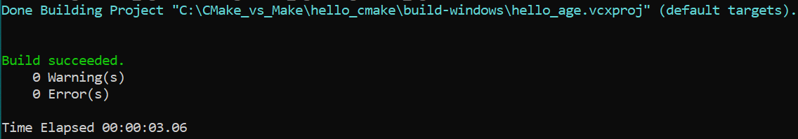
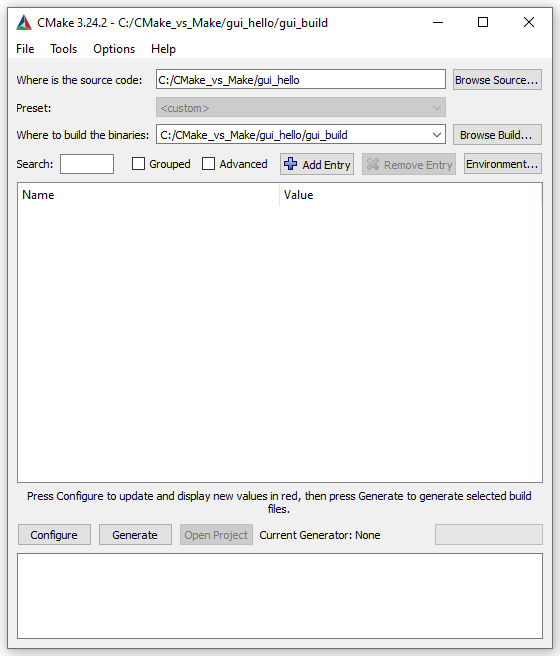
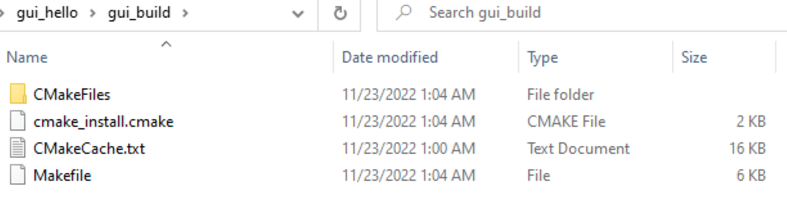

CMake vs. Make: What’s the Difference?
We’re Earthly. We streamline building software using containerization. If you’re into CMake or Make, you might find Earthly interesting for an even more efficient build process. Give it a look.
Creating software isn’t only about writing code; you need to build all the source code to get a usable software artifact. This build process can be done manually, but it can become difficult as you start working on larger projects. This is where tools like CMake and Make can help you automate the process. Both of these tools allow you to go from source code to executables.
In this article, you’ll learn how CMake and Make work and the key differences between them. You’ll then implement CMake and Make to see their differences in action.
What Is Compilation?
A compiler is a program that translates source code into machine code. The compilation of code consists of a few steps, including preprocessing, compiling, and linking, to create either a library or an executable that can be directly run by the computer it was made for.
This compilation process is also known as the build process and is where CMake and Make enter the picture.
How CMake and Make Work
CMake and Make are especially helpful when it comes to
automation and save you time by putting all the commands
required to build the program in either a Makefile or CMakeLists.txt
file without having to type them out every time.
Make is a tool that controls the generation of executables and other non–source files of a program from the program’s source files. It obtains the instructions on how to build the program from a file called the Makefile.
On the other hand, CMake requires a CMakeLists.txt
file and is a cross-platform Make. This means that it
works on different operating systems. It allows compiler-independent
builds, testing, packaging, and installation
of software. It’s important to note that CMake produces
build files for other systems; however, it’s not a build
system itself. CMake can generate a Makefile, and then
the generated Makefile can be used with Make in the
platform being worked on:
To use Make, you have to manually create the Makefile, but with CMake, the Makefile is automatically created.
In the following sections, you’ll learn how to compile a simple program using both CMake and Make to better understand their differences.
Installing CMake and Make
To begin, you need to install Make and CMake on your operating system.
To install CMake, follow the instructions available on their website.
On both Windows and Linux, run the following command to check the CMake version number:
>_>_cmake --versionIf you have installed CMake on Windows, you’ll have the following output:
OutputOutputcmake version 3.24.2
CMake suite maintained and supported by Kitware (kitware.com/cmake).
And the output on Linux will look like this:
OutputOutputcmake version 3.10.2
CMake suite maintained and supported by [Kitware](kitware.com/cmake).
Next, check the version of Make:
>_>_make --versionThe output should look similar to the following:
OutputOutputGNU Make 4.1
Built for x86_64-pc-linux-gnu
Copyright (C) 1988-2014 Free Software Foundation, Inc.
License GPLv3+: GNU GPL version 3 or later <http://gnu.org/licenses/gpl.html>
This is free software: you are free to change and redistribute it.
There is NO WARRANTY, to the extent permitted by law.
If you’re on a Windows machine, check the MSBuild version:
>_>_msbuild -versionThe output should look like this:
OutputOutput
Microsoft (R) Build Engine version 15.8.168+ga8fba1ebd7 for .NET Framework
Copyright (C) Microsoft Corporation. All rights reserved.
15.8.168.64424
Note: To build the CMake artifacts on Windows, you need to install MSBuild, a build engine.
Because Make comes bundled with the Unix operating system, there is no need to install it. However, there may be a need to upgrade to the latest version (which is version 4.3 at the time of writing) to improve functionality and prevent security vulnerabilities.
To install Make on a Windows machine, follow these instructions.
Cmake vs. Make Builds: Differences You Should Know
In this tutorial you’ll learn how to build an application with both CMake and Make. In doing so, you’ll learn the differences between the two, including graphical user interface (GUI) support, management of dependencies, and cross-platform capabilities.
Generate a Build System
One of the main differences between CMake and Make is that CMake creates output that can be used by build systems like Make. This means that CMake acts as a generator for other build systems and it’s not responsible for the actual compilation. In contrast, the output of Make is a compiled binary that can be executed on the target computer.
Note: The source code examples in this article are in the C++ programming language. However, you can use any compiled programming language.
To demonstrate this, look at an example where the
following C++ program is run, which gives a greeting,
asks for an age, and then prints out that number. The
program is composed of three files: main.cpp,
age.cpp, and process_age.h:
1 - main.cpp
# include "process_age.h"
# include <iostream>
int main(){
std::cout << "Hello, Earthly!\n";
processAge();
return 0;
}2 - age.cpp
# include <iostream>
using namespace std;
void processAge(){
int age;
cout << "Please enter your age: ";
cin >> age;
cout << "You are " << age << " years old.\n";3 - process_age.h
void processAge();Building With Make
To build your project with Make, you have to create a Makefile. Makefile entries generally have the following format:
target: dependencies
<tab> commandFor this example, the contents of the Makefile will look like this:
hello_age: hello.o age.o
g++ hello.o age.o -o hello_age
hello.o: hello.cpp
g++ -c hello.cpp
age.o: age.cpp
g++ -c age.cpp
clean:
rm *.o hello_ageFrom the above we can see that we have the target,
hello_age which depends on the hello.o and
age.o objects. The hello.o and age.o objects are created
from the hello.cpp and age.cpp source files
respectively.
After creating the Makefile, the four files should now be in the directory:

To run this program using Make, run make
in the terminal. This will compile the files using the
g++
compiler, which should already be installed on the
computer. The output of this command will be a hello_age
executable:

Next, run the command ./hello_age, which
will run the executable and print out “Hello, Earthly!”.
Then it will give a prompt to enter the age. For a given
age of “50”, it will print the following:
OutputOutputHello, Earthly!
Please enter your age: 50
You are 50 years old.
After running the application, it’s time to clean up
the created files with the make command by
running the command make clean, removing
age.o, main.o, and hello_age
from the directory:

Building With CMake
Now that you’ve seen how Make builds a C++ program, let’s see how CMake does it.
Start by creating a directory named hello_cmake
and put in three files: age.cpp, main.cpp,
and process_age.h:

Then in the hello_cmake directory, create
two directories called build-unix and build-windows.
Everything created by CMake will be placed in these
directories, and they help separate the source files and
the files created by CMake. build-unix is
needed for builds that run on Unix systems, and build-windows
is needed for Windows systems.
Next, create a file named CMakeLists.txt,
which is the CMake configuration file. It contains the
instructions that will be used to build the program:
cmake_minimum_required(VERSION 3.10.0)
#project name
project (hello_cmake)
add_executable(hello_age main.cpp age.cpp)The CMakeLists.txt file contains a set of
directives and instructions describing the project’s
source files and targets. The above CMakeLists.txt
starts with cmake_minimun_required(VERSION 3.10.0),
which specifies the minimum version of CMake that can be
used to process the project. In this instance, you need
version 3.10.0 or an error will be reported.
project(hello_cmake) specifies the name of
the project that is given to the cmake
command and add_executable(hello_age main.cpp
age.cpp) adds an executable target named hello_age
that is built from the specified source files (ie
main.cpp and age.cpp).
Navigate into the build-unix folder and
run the following command if using a Unix system:
>_>_cmake ..This will build the project and create a Makefile in
the build-unix folder:

The following are the contents of the directory build-unix
after running the CMake command:
build-unix
contents after running CMakeThe Makefile has now been created. To compile the
application, run the make command in order
to put a hello-age executable inside the
build-unix directory:
>_>_makemake in the build-unix
directoryThen run the hello_age executable file,
which was created by running the make
command:
>_>_./hello_agebuild-unix
contents after running MakeTo ensure that this executable works similarly to the
one created by the make command, run ./hello_age:
>_>_./hello_ageAs you can see, the program works as before. The only difference is that this time, “51” was inputted as the age.
In summary: The difference between CMake and Make is
that Make creates executables from the source files,
which have to include a Makefile. In contrast, when
using CMake, a CMakeLists.txt file is
provided, which is used to create a Makefile. This
Makefile is then used with Make to create the executable
that can be run.
Cross-Platform vs. Single Platform
Another difference between CMake and Make is that CMake
is cross-platform, while Make is single platform. This
means that with CMake, you can build the same
program—using the same command—on different platforms.
To demonstrate this, build a hello_age
program on a Windows platform.
On a Windows machine, copy the directory hello_cmake
and then navigate into the build-windows
directory using the command prompt:
>_>_C:\CMake_vs_Make\hello_cmake\build-windows>Then run the following cmake command:
>_>_cmake ..This will build the C++ code for Windows Visual Studio 15 2017 build system:
OutputOutput-- Building for: Visual Studio 15 2017
-- Selecting Windows SDK version 10.0.17763.0 to target Windows 10.0.18363.
-- The C compiler identification is MSVC 19.16.27043.0
-- The CXX compiler identification is MSVC 19.16.27043.0
-- Detecting C compiler ABI info
-- Detecting C compiler ABI info - done
-- Check for working C compiler: C:/Program Files (x86)/Microsoft Visual Studio/2017/BuildTools/VC/Tools/MSVC/14.16.27023/bin/Hostx86/x86/cl.exe - skipped
-- Detecting C compile features
-- Detecting C compile features - done
-- Detecting CXX compiler ABI info
-- Detecting CXX compiler ABI info - done
-- Check for working CXX compiler: C:/Program Files (x86)/Microsoft Visual Studio/2017/BuildTools/VC/Tools/MSVC/14.16.27023/bin/Hostx86/x86/cl.exe - skipped
-- Detecting CXX compile features
-- Detecting CXX compile features - done
-- Configuring done
-- Generating done
-- Build files have been written to: C:/CMake_vs_Make/hello_cmake/build-windows
If you navigate to the build-windows
directory, you should be able to see the following
files:
build-windows
contentsNext, open the hello_cmake.sln file with
Visual Studio Code or compile it in the command prompt.
To compile it, just make sure MSBuild.exe
is in the path. Then run the following command from
within the build-windows folder:
>_>_MSBuild.exe hello_age.vcxprojThe previous code will build the project, and the following will be the output:
/
This build process will create three directories: Debug,
hello_age.dir, and Win32. Find
the executable file in the Debug directory
and run it using the following command:
>_>_hello_age.exeIn this example, the age entered was “52”:
OutputOutputHello, Earthly!
Please enter your age: 52
You are 52 years old.
As shown, the same commands can be run on both Unix-based systems and Windows-based systems to create a build system with CMake, which makes CMake platform-agnostic. After the output is generated, any build system of choice can then be used to build the application. In this case, Make is used for the Unix-based platform and MSBuild for Windows.
CMake Has a GUI
CMake comes with a GUI that can be used to configure projects. The GUI is an alternative to the command line, especially if the preference is to perform commands visually. In contrast, Make is purely a command-line tool that does not provide any sort of GUI:
For beginners, the CMake GUI makes for an easier learning curve and guides in getting a build. It does this by being intuitive, providing suggestions, and giving instant feedback by highlighting problematic commands.
To use the GUI, you need to specify the paths to the source code files as well as the output of the build process.
Create a directory and copy over the main.cpp
and age.cpp files. Also create a new
directory called gui_build which is where
the build files will be created.
The directory should look as follows:
After specifying the source and output directories, the CMake GUI should look as follows:  Then click on Configure which will open a dialog box for you to choose which build system you want to generate for.
In this case, choose MinGW Makefiles and then click on Finish.
This will give instant feedback that there is no CMakeLists.txt file which demonstrates how the CMake GUI highlights problems.
Now add the CMakeList.txt file and run Configure again. This time there will be no error.
Then click on Generate to generate the Makefile. If you go into the directory you specified to have the binaries, you will see the files generated.

Active Development
CMake was released in 2000 and is still maintained and supported by an open-source community alongside Kitware under a very permissive Berkeley Source Distribution (BSD) license:
The latest release of Make is version 4.3, released at the beginning of 2020:
Active development is important as it shows that new features are being added and security vulnerabilities are being fixed regularly. For this reason, if you’re starting a new project, CMake is the better choice.
Dependency Handling
Another difference is that CMake has better dependency
handling than Make. Particularly, Make uses a list of
what to build and how to build it in
terms of dependencies. But with CMake, when adding a
third-party dependency, all the resources required for
that third-party dependency have to be localized. Then
the program or any other consumer of the dependency will
only have to add target_link_libraries(dependency)
in the CMakeLists.txt file.
More recently, CMake added the FetchContent
module, which is a better way to fetch dependencies that
have submodules. FetchContent allows
getting the source code of the dependency, including it
in the CMake project, and then having it compiled from
the source with the rest of the project. In contrast,
Make doesn’t have this module, and the path to the
dependency has to be explicitly set.
Conclusion
You now know the differences between CMake and Make, and why CMake, with its ongoing development, dependency management, and suitability for multiple platforms, is a great pick. If you’re enjoying the efficiency of CMake, you might want to take a look at Earthly. It’s a tool that takes build automation a step further.
Keep coding!
If you are looking for a solution to avoid the complexities of Makefile, check out Earthly. Earthly takes the best ideas from Makefile and Dockerfile, and provides understandable and repeatable build scripts, minus the head-scratching parts of the Makefile.